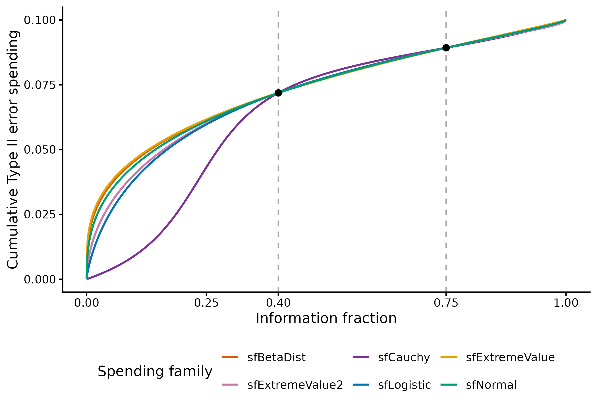

Calibrating futility spending to conditional power
Source:vignettes/CPFutilitySpending.Rmd
CPFutilitySpending.RmdgsCPFutilitySpending() selects lower spending parameters
so that conditional power (CP) at selected interim futility bounds
matches requested targets. It provides a way to specify futility in
terms of the probability of future efficacy rejection. Each candidate is
rebuilt with gsDesign(), including the information needed
to retain the design’s target unconditional power. Timing and efficacy
spending remain fixed; maximum information need not remain fixed.
The boundary summaries show three perspectives on future efficacy
rejection: CP assumes the observed effect at the bound
continues, CP H1 assumes the planned alternative
effect, and PP averages conditional power over the
posterior effect distribution using gsPP(). By default,
gsBoundSummary() uses the broad, mildly informative normal
prior
normalGrid(mu = x$delta / 2, sigma = 10 / sqrt(x$n.fix)) on
the standardized effect scale. Its center is halfway between the null
(zero) and the planned alternative (x$delta); it is updated
using the interim result at the bound. Thus PP incorporates uncertainty
about the effect rather than assuming one fixed value. CP H1 and PP
provide context in the tables; the examples here primarily calibrate
CP. A parallel survival example uses
gsPPFutilitySpending() to target PP
instead.
A design warning: futility, sample size, and overall power
Targeting high conditional power at a futility boundary can require a much larger maximum sample size than a fixed design with no interims if overall power must remain unchanged. A stringent futility rule stops some trials even when the planned treatment effect is real. Recovering that lost power among trials that continue can be expensive in sample size. An alternative is to accept lower overall power by increasing the design’s beta and recalibrating, rather than insisting on 90% power at any sample-size cost.
An aggressive futility analysis can be viewed as a Phase II
proof-of-concept gate embedded in a Phase III confirmatory trial. For
perspective, two independent studies with 80% and 90% power have a
probability of success in both of 0.80 * 0.90 = 0.72. This
is an illustration, not the power formula for an integrated group
sequential trial: its interim and final statistics are dependent, and
its overall power must be calculated from the joint design. The same
multiplication applies if the second probability is explicitly
conditional on passing the first gate.
For some development programs, 85% overall power may therefore be a more realistic compromise than 90% with stringent futility. This is a design choice to justify in context, not a universal recommendation. Compare the maximum sample size, expected sample size, and probability of stopping a truly effective treatment. The examples below retain 90% power to make the sample-size cost visible; the binomial and normal examples compare a fixed design, efficacy-only monitoring, and monitoring with calibrated futility.
A useful planning constraint is to limit the maximum sample size to,
say, 120% of the fixed-design size at the same alpha, beta, and effect
assumptions. Rather than selecting interim CP targets in isolation, seek
targets compatible with that inflation budget. This may require lower CP
thresholds (less aggressive futility), different interim timing, or
reconsideration of overall power. With several interims, assess the
targets jointly: the constraint applies to the complete design, not
separately to each look. The 20% limit is an illustrative planning
choice, not a default constraint enforced by
gsCPFutilitySpending(). The sample-size comparisons below
show whether the chosen targets meet that illustrative budget; lowering
an early CP target does not by itself guarantee inflation below 20%.
As cautious starting points for these examples, avoid CP targets above 0.2 before 50% information and consider up to 0.3 at or after 50%. These are planning heuristics, not universal cutoffs or assurances of acceptable futility. Inspect the effect estimates at the bounds, beta spending, and sample-size inflation before deciding whether even these targets are too stringent.
What is being calibrated?
With theta = NULL, the default used below, CP assumes
the observed effect implied by each candidate bound,
lower$bound[i] / sqrt(n.I[i]). Thus we target the
CP row in gsBoundSummary(), not CP
H1 or PP. A specified future effect can
instead be supplied with theta; a scalar is used at all
targeted looks. This is a standardized effect on the scale used by
gsCP().
The function supports beta-spending futility for
test.type 3, 4, 7, and 8. The examples use type 4, fixed
information fractions, and Lan-DeMets O’Brien-Fleming efficacy spending
(sfu = sfLDOF), without sfupar.
| Number of CP targets | Supported spending families |
|---|---|
| One |
sfHSD, sfPower,
sfExponential, sfLDOF
|
| Two |
sfLogistic, sfBetaDist,
sfCauchy, sfNormal,
sfExtremeValue, sfExtremeValue2
|
| One or more |
sfLinear, with one free cumulative spending proportion
per target |
The number of targets must match the number of free spending
parameters. Targeted looks must be active interim futility analyses; the
final analysis is not a calibration target. Multiple-target fitting uses
latest-to-earliest initialization followed by joint refinement. A fit is
returned only when every residual meets control$cp_tol
(default 1e-4).
We independently recompute CP from each returned or reconstructed design, rather than relying only on the calibration metadata:
check_cp <- function(design, target, i = seq_along(target), tol = 1e-4) {
achieved <- vapply(i, function(j) {
theta <- design$lower$bound[j] / sqrt(design$n.I[j])
sum(gsCP(design, i = j, zi = design$lower$bound[j], theta = theta)$upper$prob)
}, numeric(1))
stopifnot(max(abs(achieved - target)) <= tol)
stopifnot(abs(sum(design$upper$prob[, 2]) - (1 - design$beta)) < 2e-5)
out <- data.frame(
Analysis = i, Target = target, CP = achieved,
Residual = achieved - target
)
size_label <- if (inherits(design, "gsSurv")) "Events" else if (design$n.fix > 1) {
"Participants"
} else "Information"
out[[size_label]] <- round(design$n.I[i], 1)
out
}The comparison tables label cumulative event counts for survival designs and total participants across both groups for binomial and normal designs. These are planning quantities shown to one decimal, without integer conversion or recalibration. Boundary summaries also display the size at each analysis (rounded up for presentation).
One parameter: CP 0.3 at the first interim
Here futility is tested only at IA 1. The second interim retains efficacy testing but has no futility test.
x1 <- gsDesign(
k = 3, test.type = 4, timing = c(.5, .75),
sfu = sfLDOF, sfl = sfHSD, sflpar = 1,
testLower = c(TRUE, FALSE, FALSE)
)
fit1 <- gsCPFutilitySpending(x1, target_cp = .3, i = 1)
fit1$cpFutilitySpending$sflpar
#> [1] 2.430891
check_cp(fit1, .3) |> lt()Event-driven survival design with gsSurv()
The same information fractions and spending specification can be used
in an event-driven survival design. Reuse the fitted parameter from
fit1; other survival assumptions use gsSurv()
defaults, with equal randomization made explicit. Check CP on the
survival design itself, since numerical tolerances can introduce small
differences.
surv_design <- gsSurv(
k = 3, test.type = 4, timing = c(.5, .75),
sfu = sfLDOF, sfl = sfHSD,
sflpar = fit1$cpFutilitySpending$sflpar,
testLower = c(TRUE, FALSE, FALSE), ratio = 1
)
check_cp(surv_design, .3) |> lt()
gsBoundSummary(surv_design, digits = 4, exclude = "B-value") |>
lt() |> lt_format(columns = c("Efficacy", "Futility"), decimals = 4)gsCPFutilitySpending() does not currently accept a
gsSurv object directly. Here calibration is performed on
gsDesign() and its fitted spending is then passed to
gsSurv(). The survival summary reports approximate hazard
ratios at the bounds, rather than a generic standardized effect.
This first survival example is deliberately a cautionary one. CP 0.3 after 50% of the planned events gives a futility HR of about 0.8 and spends 7.7 percentage points of the total 10% Type II error budget at that first analysis. Thus it may stop a trial showing approximately a 20% hazard reduction, and uses roughly three quarters of the beta budget there. For a trial planned with 90% overall power, this looks overly aggressive and motivates considering a lower CP target even at 50% information.
Targeting predictive power instead
gsPPFutilitySpending() can target PP using the default
summary prior described in the introduction. For comparison with the
CP-targeted survival design, keep the same timing, testing indicators,
spending families, and survival assumptions. First construct a matching
statistical reference on the event-count scale. The
prior’s numeric support must be on that same standardized-effect scale;
the normalized n.fix = 1 reference from the opening example
is not interchangeable with it.
pp_reference <- gsDesign(
k = 3, test.type = 4, timing = c(.5, .75),
n.fix = surv_design$n.fix,
delta0 = surv_design$delta0, delta1 = surv_design$delta1,
sfu = sfLDOF, sfl = sfHSD, sflpar = 1,
testLower = c(TRUE, FALSE, FALSE)
)
prior <- normalGrid(
mu = pp_reference$delta / 2, sigma = 10 / sqrt(pp_reference$n.fix)
)
fit_pp <- gsPPFutilitySpending(pp_reference, target_pp = .3, i = 1, prior = prior)
surv_pp <- gsSurv(
k = 3, test.type = 4, timing = c(.5, .75),
sfu = sfLDOF, sfl = sfHSD,
sflpar = fit_pp$ppFutilitySpending$sflpar,
testLower = c(TRUE, FALSE, FALSE), ratio = 1
)
achieved_pp <- gsPP(
surv_pp, i = 1, zi = surv_pp$lower$bound[1],
theta = prior$z, wgts = prior$wgts
)
stopifnot(abs(achieved_pp - .3) <= 1e-4)
stopifnot(abs(sum(surv_pp$upper$prob[, 2]) - .9) < 2e-5)
# Verify that the explicit prior is also this survival design's default prior.
stopifnot(isTRUE(all.equal(
prior, normalGrid(mu = surv_pp$delta / 2, sigma = 10 / sqrt(surv_pp$n.fix))
)))
gsBoundSummary(surv_pp, prior = prior, digits = 4, exclude = "B-value") |>
lt() |> lt_format(columns = c("Efficacy", "Futility"), decimals = 4)The PP row, not the CP or CP H1 row, now attains 0.3 at the first futility bound. The prior stays fixed during fitting, but each candidate’s posterior uses that candidate’s bound and information. As with the CP example, this is statistical calibration followed by survival reconstruction, not direct calibration of a survival object.
survival_comparison <- function(design, label) {
data.frame(
Target = label,
FutilityHR = gsHR(design$lower$bound[1], 1, design),
BetaSpending = design$lower$spend[1],
IA1Events = design$n.I[1], FinalEvents = max(design$n.I),
MaximumN = max(design$N)
)
}
rbind(
survival_comparison(surv_design, "CP = 0.3"),
survival_comparison(surv_pp, "PP = 0.3")
) |> lt() |>
lt_format(columns = c("FutilityHR", "BetaSpending"), decimals = 4) |>
lt_format(columns = c("IA1Events", "FinalEvents", "MaximumN"), decimals = 1)Equal numerical targets for CP and PP need not imply equal futility bounds or required event counts and sample sizes. The earlier cautions about beta spending and sample-size inflation apply to PP targets too; averaging over a prior does not remove these design trade-offs.
Fixed calendar analyses with gsSurvCalendar()
For analyses at months 18, 27, and 36, the information fractions are
generally not the calendar fractions, nor the .5, .75
fractions above. Derive them from a reference calendar design before
calibrating. This example has a 12-month control median, hazard ratio
0.7, equal randomization, and a fixed 36-month trial with 12 months of
minimum follow-up. Enrollment is scaled to power the design; the last
enrollment period is extended as needed to fill the 24-month enrollment
window.
The first calendar analysis below occurs before 50% of expected information. A CP target of 0.3 also looks too stringent here. We therefore lower it to 0.2 and inspect the resulting bounds; this is a more cautious starting point, not an automatic endorsement of the design.
calendar_args <- list(
calendarTime = c(18, 27, 36), spending = "information",
test.type = 4, sfu = sfLDOF, sfl = sfHSD, sflpar = 1,
testLower = c(TRUE, FALSE, FALSE),
lambdaC = log(2) / 12, hr = .7, ratio = 1,
R = 12, minfup = 12
)
calendar_reference <- do.call(gsSurvCalendar, calendar_args)Direct calibration of this object is also unsupported (it has class
gsSurv). Instead, construct a statistical
gsDesign() reference with its information fractions,
spending times, fixed-design event count, and effect scale. This is an
explicit reconstruction, not removal of the survival class to bypass
validation.
calendar_statistical <- gsDesign(
k = calendar_reference$k, test.type = 4,
alpha = calendar_reference$alpha, beta = calendar_reference$beta,
n.fix = calendar_reference$n.fix, timing = calendar_reference$timing,
usTime = calendar_reference$upper$sTime,
lsTime = calendar_reference$lower$sTime,
delta0 = calendar_reference$delta0, delta1 = calendar_reference$delta1,
sfu = sfLDOF, sfl = sfHSD, sflpar = 1,
testLower = c(TRUE, FALSE, FALSE)
)
calendar_fit <- gsCPFutilitySpending(calendar_statistical, target_cp = .2, i = 1)
calendar_args$sflpar <- calendar_fit$cpFutilitySpending$sflpar
calendar_design <- do.call(gsSurvCalendar, calendar_args)
stopifnot(max(abs(calendar_design$timing - calendar_reference$timing)) < 1e-6)
check_cp(calendar_design, .2) |> lt()
data.frame(
Analysis = seq_len(calendar_design$k),
Month = calendar_design$T,
InformationFraction = calendar_design$timing,
Events = round(calendar_design$n.I, 1)
) |> lt()
gsBoundSummary(calendar_design, digits = 4, exclude = "B-value") |>
lt() |> lt_format(columns = c("Efficacy", "Futility"), decimals = 4)This works because proportional enrollment scaling at fixed calendar
times preserves the expected information fractions in this example. We
explicitly verify that property and the resulting CP. It is not a
general calibration method for designs that change enrollment shape,
follow-up, or information fractions during optimization. We use
information-based spending here; calendar-based spending would require
retaining its distinct spending times as well. Do not simply reuse
fit1’s parameter with different information fractions.
Two parameters: a risk-difference design
We now enable futility at both interims. A two-parameter spending
function allows us to specify two CP targets. Consider adverse-event
probabilities 0.15 on control and 0.10 on experimental treatment, with
equal randomization. The benefit is the risk difference
p[C] - p[E] = 0.05. nBinomial() gives the
fixed-design total sample size; gsDesign() inflates it for
sequential monitoring. Alpha is 0.025 one-sided and power is 90% in both
calculations. Use sfCauchy for the worked example and
compare all six families below. At 40% information, CP 0.3 would also be
a stringent first futility target. We instead use CP 0.2 at 40% and CP
0.3 at 75% information.
n_binomial <- nBinomial(p1 = .15, p2 = .10, alpha = .025, beta = .1, ratio = 1)
n_binomial
#> [1] 1834.641
x2 <- gsDesign(
k = 3, test.type = 4, timing = c(.4, .75), sfu = sfLDOF,
n.fix = n_binomial, delta0 = 0, delta1 = .05, endpoint = "Binomial",
testLower = c(TRUE, TRUE, FALSE)
)
target2 <- c(.2, .3)
fit2 <- gsCPFutilitySpending(x2, target_cp = target2, i = 1:2, sfl = sfCauchy)
check_cp(fit2, target2) |> lt()Use the fitted parameter vector directly in a fresh
gsDesign() call; do not copy a rounded parameter vector
from printed output.
final2 <- gsDesign(
k = 3, test.type = 4, timing = c(.4, .75),
n.fix = n_binomial, delta0 = 0, delta1 = .05, endpoint = "Binomial",
sfu = sfLDOF, sfl = sfCauchy,
sflpar = fit2$cpFutilitySpending$sflpar,
testLower = c(TRUE, TRUE, FALSE)
)
check_cp(final2, target2) |> lt()
gsBoundSummary(final2, deltaname = "p[C] - p[E]", Nname = "Participants",
digits = 4, exclude = "B-value") |>
lt() |> lt_format(columns = c("Efficacy", "Futility"), decimals = 4)Fixed sample size and inflation from futility
The fixed-design total is 1834.6 participants across both groups. For comparison, remove futility but keep the same efficacy spending, timing, alpha, and power. The difference between this efficacy-only design and the calibrated design shows the additional maximum sample size associated with the futility rule.
binomial_efficacy_only <- gsDesign(
k = 3, test.type = 1, timing = c(.4, .75), sfu = sfLDOF,
n.fix = n_binomial, delta0 = 0, delta1 = .05, endpoint = "Binomial"
)
binomial_sizes <- c(n_binomial, max(binomial_efficacy_only$n.I), max(final2$n.I))
data.frame(
Design = c("Fixed, no interims", "Efficacy only", "Efficacy and CP-based futility"),
MaximumTotalN = binomial_sizes,
InflationPercent = 100 * (binomial_sizes / n_binomial - 1)
) |> lt() |> lt_format(columns = c("MaximumTotalN", "InflationPercent"), decimals = 1)Here the maximum sample size with calibrated futility is 1.36 times the fixed-design size. The comparison attributes most of the inflation to retaining 90% power in the presence of the futility bounds, rather than to the efficacy monitoring alone. These are unrounded planning sample sizes, not expected enrollment: early stopping can reduce the average number of participants used.
What does delta at the bound mean?
It is the effect estimate corresponding to the boundary Z-statistic,
not the alternative effect used to power the trial.
delta1 = .05 and delta0 = 0 tell the summary
how to translate the canonical effect into a risk difference. The
transformation used by gsDelta() is
\[ \widehat\delta_i = \delta_0 + (\delta_1-\delta_0)\frac{Z_i / \sqrt{n.I_i}}{\texttt{x\$delta}}. \]
Here x$delta is the standardized alternative, whereas
delta1 is the clinical effect. Thus setting
n.fix alone supplies a sample-size scale but does not
supply the clinical effect scale. For binomial data these boundary risk
differences are normal-approximation translations using design-based
information, not exact binomial boundaries.
data.frame(
Analysis = 1:2,
Participants = round(final2$n.I[1:2], 1),
FutilityRiskDifference = gsDelta(final2$lower$bound[1:2], 1:2, final2),
EfficacyRiskDifference = gsDelta(final2$upper$bound[1:2], 1:2, final2)
) |> lt()At a futility boundary, the default CP calculation assumes that this
observed effect continues for future observations. It need not equal the
planned 0.05 risk difference, and the same CP at different looks need
not imply the same boundary effect. CP H1 instead uses the
planned alternative. All sample sizes here are unrounded; integer
conversion can change achieved CP.
Compare all six two-parameter families
The same two targets are feasible for each supported two-parameter family in this example. Function names and function objects are both accepted.
families <- c(
"sfLogistic", "sfBetaDist", "sfCauchy", "sfNormal",
"sfExtremeValue", "sfExtremeValue2"
)
fits2 <- setNames(lapply(families, function(family) {
if (family == "sfCauchy") return(fit2)
gsCPFutilitySpending(x2, target_cp = target2, i = 1:2, sfl = family)
}), families)
invisible(lapply(fits2, check_cp, target = target2))
spending_curves <- do.call(rbind, lapply(names(fits2), function(family) {
fit <- fits2[[family]]
times <- sort(unique(c(seq(0, 1, length.out = 501), .4, .75)))
data.frame(
Family = family, Time = times,
Spending = fit$lower$sf(fit$beta, times, fit$lower$param)$spend
)
}))The fitted parameter vectors differ and have different meanings
across families. The spending curves are more informative: they meet, up
to numerical tolerance, at the two specified interim times, but have
different shapes around them. The black points mark the fitted
sfCauchy spending at those looks.
spending_plot <- ggplot(spending_curves, aes(Time, Spending, colour = Family)) +
geom_vline(xintercept = c(.4, .75), linetype = "dashed", colour = "grey65") +
geom_line(linewidth = .8) +
geom_point(
data = subset(spending_curves, Family == "sfCauchy" & Time %in% c(.4, .75)),
colour = "black", size = 2.2
) +
scale_colour_manual(values = c(
sfLogistic = "#0072B2", sfBetaDist = "#D55E00", sfCauchy = "#7B3294",
sfNormal = "#009E73", sfExtremeValue = "#E69F00", sfExtremeValue2 = "#CC79A7"
)) +
scale_x_continuous(breaks = c(0, .25, .4, .75, 1)) +
labs(x = "Information fraction", y = "Cumulative Type II error spending",
colour = "Spending family") +
theme_classic(base_size = 12) +
theme(legend.position = "bottom") +
guides(colour = guide_legend(nrow = 2, byrow = TRUE))
spending_plot
Cumulative Type II error spending for six calibrated families. Dashed lines mark the interim information fractions; black points mark their common spending, up to calibration tolerance.
All six curves are similar over the range in which these interim
analyses are most likely to occur, around and between the planned
information fractions. The distinctive feature of sfCauchy
is its spending when the first interim occurs substantially earlier than
planned: in this example it spends less Type II error there, while
smoothly approaching the same spending at the planned looks. That is an
attractive shape when considering an early first analysis. All six
curves are smooth inside (0, 1); Cauchy is not uniquely smooth. Adding
looks or changing their timing requires recalibration if the CP targets
are to be retained. The plot describes the spending rule away from the
planned looks, not a guarantee of the targeted CP at an unplanned early
look.
Piecewise-linear spending: comparing two normal means
Consider equal-sized groups with a planned mean difference of 0.5 and
common standard deviation 1.1. nNormal() supplies the
fixed-design total sample size for a one-sided alpha of 0.025 and 90%
power. This uses a known-variance normal approximation, not a sequential
t-test with estimated variance.
With three targets, use sfLinear. Its knot times are
fixed at the targeted lower spending times. The free parameters are
cumulative proportions of the total lower spending, constrained to be
strictly increasing in (0, 1).
The starting proportions below help the numerical search. They are not CP targets and are not fixed final spending values. They may be omitted to use automatically derived starts; suitable explicit starts can speed up convergence.
n_normal <- nNormal(delta1 = .5, sd = 1.1, alpha = .025, beta = .1, ratio = 1)
n_normal
#> [1] 203.4237
x3 <- gsDesign(
k = 4, test.type = 4, timing = c(.3, .5, .7), sfu = sfLDOF,
n.fix = n_normal, delta0 = 0, delta1 = .5, endpoint = "Normal",
testLower = c(TRUE, TRUE, TRUE, FALSE)
)
target3 <- c(.2, .3, .3)
fit3 <- gsCPFutilitySpending(
x3, target_cp = target3, i = 1:3, sfl = sfLinear,
control = list(start = c(.85, .95, .98))
)
check_cp(fit3, target3) |> lt()
fit3$cpFutilitySpending$sflpar
#> [1] 0.3000000 0.5000000 0.7000000 0.7667615 0.9288363 0.9671979For sfLinear, the sflpar vector contains
all knot times first, followed by all fitted cumulative spending
proportions. There are six entries here but only three free
parameters. The endpoint (1, 1) is implicit. These proportions are not
the incremental spending amounts and are not CP values.
knots <- data.frame(
Analysis = 1:3,
Participants = round(fit3$n.I[1:3], 1),
Time = x3$lower$sTime[1:3],
CumulativeProportion = fit3$cpFutilitySpending$free_parameters
)
knots |> lt()
stopifnot(
all(knots$CumulativeProportion > 0 & knots$CumulativeProportion < 1),
all(diff(knots$CumulativeProportion) > 0)
)As with the two-parameter example, verify a newly constructed design with the entire fitted vector, including the knot times:
final3 <- gsDesign(
k = 4, test.type = 4, timing = c(.3, .5, .7),
n.fix = n_normal, delta0 = 0, delta1 = .5, endpoint = "Normal",
sfu = sfLDOF, sfl = sfLinear,
sflpar = fit3$cpFutilitySpending$sflpar,
testLower = c(TRUE, TRUE, TRUE, FALSE)
)
check_cp(final3, target3) |> lt()
gsBoundSummary(final3, deltaname = "Mean difference", Nname = "Participants",
digits = 4, exclude = "B-value") |>
lt() |> lt_format(columns = c("Efficacy", "Futility"), decimals = 4)Because delta1 = .5, the effect-at-bound rows are in
mean-difference units. They are not standardized mean differences or CP
values. Sample sizes are totals across both groups, with their scale
supplied by nNormal().
Fixed sample size and inflation from futility
The fixed-design total is 203.4 participants. Again, compare efficacy-only monitoring with the design that must also achieve the specified CP at three futility bounds, while keeping 90% overall power.
normal_efficacy_only <- gsDesign(
k = 4, test.type = 1, timing = c(.3, .5, .7), sfu = sfLDOF,
n.fix = n_normal, delta0 = 0, delta1 = .5, endpoint = "Normal"
)
normal_sizes <- c(n_normal, max(normal_efficacy_only$n.I), max(final3$n.I))
data.frame(
Design = c("Fixed, no interims", "Efficacy only", "Efficacy and CP-based futility"),
MaximumTotalN = normal_sizes,
InflationPercent = 100 * (normal_sizes / n_normal - 1)
) |> lt() |> lt_format(columns = c("MaximumTotalN", "InflationPercent"), decimals = 1)The calibrated design requires a maximum sample size 1.68 times the
fixed-design size. As in the binomial example, most of the increase
comes from compensating for futility stopping under the alternative, not
from efficacy monitoring alone. This illustrates why a lower overall
power target can be worth considering with aggressive futility. A
different power target requires recalculating nNormal() and
the sequential design with the same new beta, then refitting the
spending parameters. These numbers are maximum, not expected, sample
sizes.
A more conservative sequence of CP targets
The main example uses CP 0.2 at 30% information and CP 0.3 at 50% and 70%. We can also consider lower targets: here CP 0.1, 0.2, and 0.3 at the three futility bounds, retaining the same timing and efficacy spending.
target_varying <- c(.1, .2, .3)
fit_varying <- gsCPFutilitySpending(
x3, target_cp = target_varying, i = 1:3, sfl = "sfLinear",
control = list(start = c(.85, .95, .98))
)
check_cp(fit_varying, target_varying) |> lt()
gsBoundSummary(fit_varying, deltaname = "Mean difference", Nname = "Participants",
digits = 4, exclude = "B-value") |>
lt() |> lt_format(columns = c("Efficacy", "Futility"), decimals = 4)Practical limits and diagnostics
- A single early futility analysis may often be sufficient. More futility looks add opportunities to stop a truly effective treatment and need not improve the development strategy.
- Even when several futility looks are planned, fitting a
one-parameter spending function to the first interim CP target may be
adequate. Keep later desired futility looks enabled in
testLower, fit onlyi = 1, and inspect every resulting bound, its CP, effect estimate, beta spending, and sample-size implications. Later CP values are implied by the fitted spending function, not independently targeted. Use extra parameters only when the resulting later bounds do not meet the design objectives. - More targets require more free parameters, not just a larger
ivector.sfLinearsupports additional targeted interim looks, but arbitrary target vectors are not guaranteed feasible under monotone cumulative spending. -
control$cp_tolsets the maximum absolute CP residual;reltolcontrols internal convergence and does not replace this acceptance check. See?gsCPFutilitySpendingfor the complete controls and family-specific limits. ForsfLinear, supply only cumulative proportions incontrol$start, not the completesflpar; user-suppliedlowerandupperlimits are unsupported. - Inspect
fit$cpFutilitySpending$residual,$information_ratio, and$solverfor accuracy, information changes, and convergence diagnostics. Invalid inputs, infeasible targets, and convergence failures have distinct error classes; an unsuccessful solve does not return a calibrated design. - All examples verify unconditional power as well as CP. In a general reconstruction, retain all reference settings, including alpha, beta, effect assumptions, testing indicators, and any harm-spending inputs. Changing those settings or efficacy spending requires recalibration.
-
toInteger()retains the fitted spending specification, but rounding can change achieved CP and does not automatically recalibrate the design. - The calibration input must currently be a fixed-timing
gsDesign()object. Direct survival or calendar-time calibration is not implemented by either calibration function. UsegsPPFutilitySpending()for prior-averaged predictive power rather thangsCPFutilitySpending().